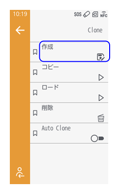
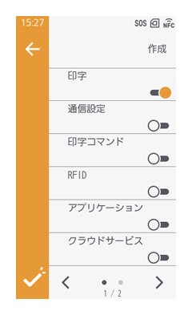
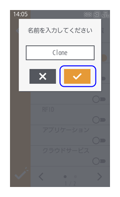
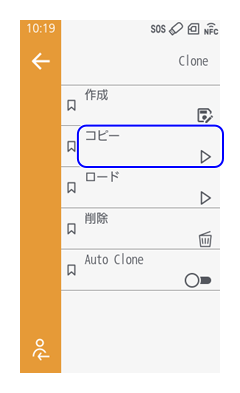
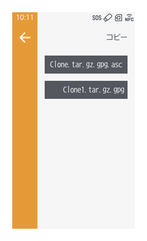
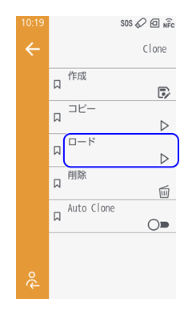
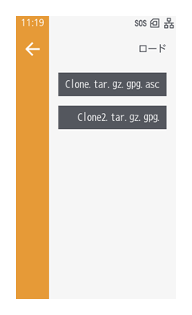
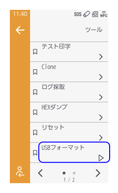
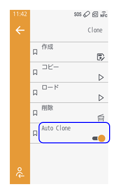

設定のバックアップ/コピー
Clone機能を使うと、本製品の設定およびインストールされているデータをUSBメモリにコピーできます。
製品交換時など、設定を新しい製品に引き継ぐときや複数台を同じ設定でセットアップするときなどに使用します。

- USBメモリを使用する場合は、ウイルスチェックをおこなったうえで本製品に接続してください。USBメモリを使用してウイルス感染した結果生じた本製品の不具合について、弊社は一切の責任を負いません。
- USBフォーマットを実行すると、USBメモリ内のデータがすべて削除されます。必要なデータは事前に別の場所に保存してください。
設定を手動でコピーする
1. Cloneデータを作成する
- 設定画面から［ツール］ > ［Clone］ > ［作成］をタップします。
 - Cloneデータに含めたい内容をタップします。
- ［印字］
［印字］メニュー内の設定がコピーされます。
［詳細設定］ > ［センサ調整］内の以下の項目はコピーされません。- ［透過センサ］
- ［透過スライスレベル］
- ［透過2センサ］
- ［透過2スライスレベル］
- ［反射センサ］
- ［反射スライスレベル］
- ［ハクリセンサ］
- ［ノンセパセンサ］
- ［通信設定］
［通信設定］メニュー内の設定がコピーされます。
以下の項目はコピーされません。- ［ネットワーク］ > ［有線］および［Wi-Fi］内
- ［IPv4］および［IPv6］ > ［モード］
- ［IPv4］および［IPv6］ > ［IPアドレス］
- ［IPv4］および［IPv6］ > ［サブネットマスク］
- ［IPv4］および［IPv6］ > ［ゲートウェイ］
- ［ネットワーク］ > ［有線］ および［Wi-Fi］内
- ［DHCPオプション］ > ［ホスト名］
- ［DHCPオプション］ > ［名前］
- ［ネットワーク］ > ［Wi-Fi］ > ［Wi-Fi Direct］ > ［SSID］
- ［ネットワーク］ > ［Wi-Fi］ > ［Wi-Fi Direct］ > ［IPアドレス］
- ［ネットワーク］ > ［ネットワークサービス］ > ［SNMP］内
- ［問い合わせ先］
- ［機器名称］
- ［設置場所］
- ［トラップ］ > ［セキュリティエンジンID］
- ［USB］ > ［USBシリアル］
- ［Bluetooth］ > ［デバイス名］
- ［Bluetooth］ > ［BDアドレス］
- ［モバイル通信］
- ［ネットワーク］ > ［有線］および［Wi-Fi］内
- ［IPを含める］
［通信設定］を選択している場合にのみ表示されます。選択すると、［通信設定］でコピーされる設定に加えて、以下の設定もコピーされます。- ［ネットワーク］ > ［有線］および［Wi-Fi］内
- ［IPv4］および［IPv6］ > ［モード］
- ［IPv4］および［IPv6］ > ［IPアドレス］
- ［IPv4］および［IPv6］ > ［サブネットマスク］
- ［IPv4］および［IPv6］ > ［ゲートウェイ］
- ［ネットワーク］ > ［有線］および［Wi-Fi］内
- ［BD名を含める］
［通信設定］を選択している場合にのみ表示されます。選択すると、［通信設定］でコピーされる設定に加えて、［Bluetooth］ > ［BDアドレス］の設定もコピーされます。 - ［印字コマンド］
［印字コマンド］メニュー内の設定がコピーされます。 - ［アプリケーション］
［アプリケーション］メニュー内の設定がコピーされます。 - ［クラウドサービス］
［クラウドサービス］メニュー内の設定がコピーされます。 - ［RFID］
［RFID］メニュー内の設定がコピーされます。 - ［システム］
［システム］メニュー内の設定がコピーされます。
以下の項目はコピーされません。- ［言語と地域］ > ［日付］
- ［言語と地域］ > ［時間］
- ［パスワード］ > ［パスワード更新］
- ［ツール］
［ツール］メニュー内の設定がコピーされます。 - ［コンテンツ］
以下の内容がコピーされます。- アプリデータ（ユーザーアプリ、AEPアプリ、AEP設定）
- ユーザーデータ（お気に入り、ウィジェット、パスワード、メディアプロファイル、RFIDプロファイル、画像、動画、音データ）
- システムデータ（他社コマンドデータ、タイムゾーン情報）
- 証明書
- ［印字］
- メニューバー左下の
 をタップして設定を保存します。
をタップして設定を保存します。 - 確認画面で
 をタップします。
をタップします。 - 作成するデータの名前を入力し、をタップします。

Cloneデータが作成されます。
2. CloneデータをUSBメモリにコピーする
- 本製品のUSBコネクタ（タイプA）にUSBメモリを取り付けます。

- USBコネクタ（タイプA）は、本製品の正面と背面の2箇所あります。
- 設定画面から［ツール］ > ［Clone］ > ［コピー］をタップします。
 - コピーしたいデータをタップします。

3. USBメモリ内のCloneデータを本製品に適用する
別筐体などから作成したClone データを保存したUSB メモリを本製品に取り付けて、設定内容を適用する手順を説明します。
- Cloneデータが保存されたUSBメモリを本製品のUSBコネクタ（タイプA）にUSBメモリを取り付けます。
- USB コネクタ（タイプA）は、本製品の正面と背面の2 箇所あります。
- 設定画面から［ツール］ > ［Clone］ > ［ロード］をタップします。
 - 本製品に適用させたいデータをタップします。
 - 確認画面でをタップします。
本製品が自動で再起動します。

- ［削除］をタップすると、作成したCloneデータを削除できます。
設定を自動でバックアップする
Auto Clone機能を有効にすると、本製品の設定が変更されたときに、その時点の設定およびインストールされているデータが本製品に自動的に保存されます。
保存した設定とデータを復元するには、このUSBメモリを対象の本製品に挿入します。
- ▲TBD▲オートクローン機能の実行（設定とデータの保存）には、本製品内部のUSBコネクタ（Type A）を使用します。保存した設定とデータの復元には、本製品前面のUSBコネクタ（Type A）を使用します。
- 本製品のUSB コネクタ（タイプA）にUSB メモリを取り付けます。
- USBコネクタ（タイプA）は、本製品の正面と背面の2箇所あります。
- 設定画面から［ツール］ > ［USBフォーマット］をタップし、USBメモリをフォーマットします。
［Auto Clone］が有効の場合は実行できません。
 - ［ツール］ > ［Clone］ > ［Auto Clone］をタップし、有効にします。

初期値：無効